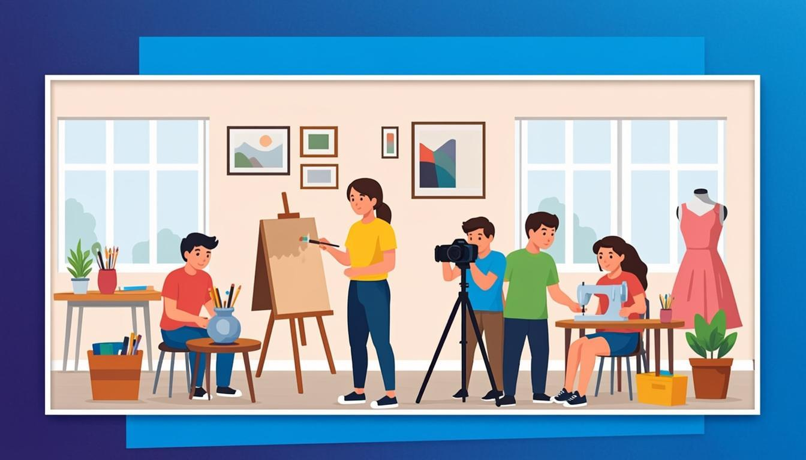
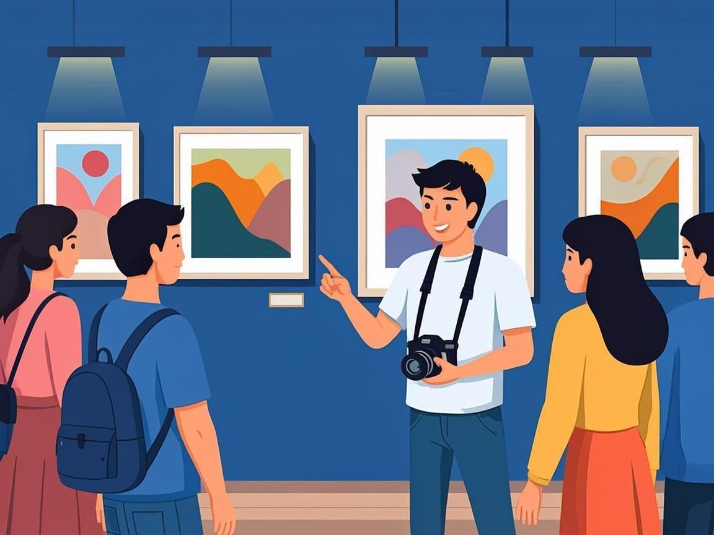
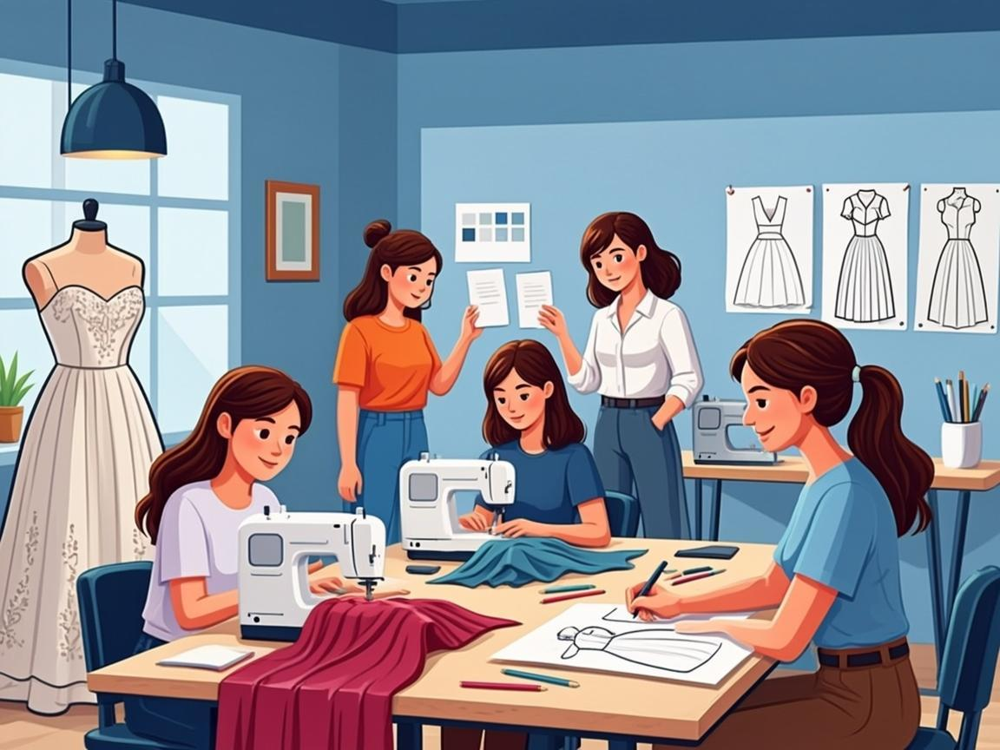

هنرستانهای غیردولتی سوره زنجان
اولین هنرستان هنرهای زیبای استان زنجان؛ جایی برای شکوفا شدن استعدادها — از طراحی و دوخت و معماری تا انیمیشن، عکاسی و موسیقی. شعبه دختران و شعبه پسران.

هنرستانی که هنر و مهارت را جدی میگیرد
سوره، اولین هنرستان هنرهای زیبای استان زنجان است که امروز با دو شعبه دخترانه و پسرانه، آموزشگاه فنی و حرفهای سوره و مرکز تخصصی کنکور هنر فعالیت میکند. هنرجویان سوره در جشنوارههای ملی و استانی افتخارآفرین بودهاند و هر سال دستاوردهای خود را در نمایشگاه سالانه هنرستان به نمایش میگذارند.
- ۲شعبه دخترانه و پسرانه
- ۸رشته هنری و مهارتی
- ۷نمایشگاه دستاورد سالانه
- 324+خبر و رویداد ثبتشده
معرفی رشتهها
رشتههای هنرستان هنرهای زیبای سوره؛ هر رشته با کارگاههای تخصصی، هنرآموزان حرفهای و پروژههای واقعی.
معماری داخلی
از نقشهکشی با اتوکد و طراحی فضاهای داخلی تا کارگاههای تزئینات گچی، چوبی و کاشیکاری و ژوژمانهای تخصصی هنرجویان.
معرفی رشتهطراحی و دوخت
طراحی فیگور، الگوسازی و دوخت حرفهای همراه با حضور در مسابقات جهانی دوخت و کارگاههای خلاقیت لباس.
معرفی رشتهفتوگرافیک
عکاسی آتلیه و مراسم، گرافیک نشر و مطبوعات و نمایشگاههای متعدد عکس هنرجویان در سطح استان و کشور.
معرفی رشتهانیمیشن
طراحی و زبان بصری، تصویرسازی و ساخت انیمیشن؛ با راهیابی به جشنوارههای ملی و رویدادهای تولید محتوای دیجیتال.
معرفی رشتهگرافیک
فناوری طراحی گرافیک؛ از کالیگرافی و طراحی بستهبندی تا کسب دیپلم افتخار در مسابقات ملی مهارت.
معرفی رشتهشبکه و نرمافزار
نصب و پیکربندی سیستمها، وبسرور، برنامهنویسی پایتون و پروژههای عملی شبکه در کارگاههای مجهز.
معرفی رشتهبرق
آموزش مبانی و کاربردهای برق با پروژههای واقعی؛ از تابلو برق تا ساخت پنل خورشیدی توسط هنرجویان. (شعبه پسران)
معرفی رشتهموسیقی
رشته نوازندگی ساز ایرانی با آزمون ورودی اختصاصی، اجراهای گروهی و گاهنامه موسیقی سوره.
معرفی رشتهچرا باید هنرستان سوره را انتخاب کرد؟!
دلایلی که سوره را به انتخاب اول خانوادههای هنردوست زنجان تبدیل کرده است.
اولین هنرستان هنرهای زیبای زنجان
سوره پیشگام آموزش هنری در استان است و از سالهای ابتدایی دهه ۱۳۹۰ تاکنون هنرجویان هنرمند بسیاری را تربیت کرده است.
مشاهدهافتخارات ملی و استانی
جشنواره جوان خوارزمی، المپیاد ملی مهارت، فراخوان پرسش مهر، جشنواره علوی و فردا؛ سوره هر سال درخشیده است.
مشاهدهرتبههای برتر کنکور هنر
رتبه ۱ کنکور هنر ۱۴۰۰ و دهها رتبه برتر دیگر؛ همراه با دورههای آمادگی اختصاصی مرکز کنکور هنر سوره.
مشاهدهنمایشگاه سالانه دستاوردها
هر سال نمایشگاه هنری و مهارتی یکساله با حضور مسئولان استانی، هنرمندان و خانوادهها برگزار میشود.
مشاهدهمرکز نوآوری و پارک علم و فناوری
مجوز رسمی پارک علم و فناوری و همکاری مستمر مرکز نوآوری نوجوان سوره با رویدادهای نوآورانه استان.
مشاهدهدو شعبه دخترانه و پسرانه
هنرستان دخترانه و پسرانه سوره در دو محل مجزا با کادر آموزشی متخصص و فضاهای آموزشی استاندارد هنری.
مشاهدهفعالیتها
از مشاوره و هدایت تحصیلی تا گالری فعالیتها، افتخارات و نرمافزار موبایل هنرستان.
مشاوره و هدایت تحصیلی
مقالات مشاورهای ویژه هدایت تحصیلی دانشآموزان
مشاهدهگالری تصاویر
گزارشی از مجموعه فعالیتهای علمی و مناسبتی دانشآموزان
مشاهدهافتخارات هنرستان
گوشهای از مجموعه افتخارات درخشان هنرستان سوره
مشاهدهنرمافزار موبایل
نرمافزار موبایل همکلاسی را دانلود و نصب کنید؛ هنرستان سوره را در فضای مجازی نیز دنبال کنید.
مشاهدهتعدادی از افتخارات مدرسه سوره
گوشهای از درخشش هنرجویان سوره در جشنوارههای ملی، استانی و بینالمللی؛ از خوارزمی و المپیاد مهارت تا کنکور هنر.


ثبتنام سال تحصیلی ۱۴۰۵-۱۴۰۶
شرایط و مراحل ثبتنام را مطالعه کنید و فرم آنلاین را تکمیل نمایید؛ کارشناسان شعبه برای مشاوره و هدایت تحصیلی با شما تماس میگیرند.